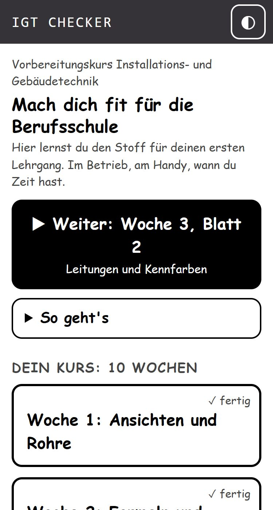
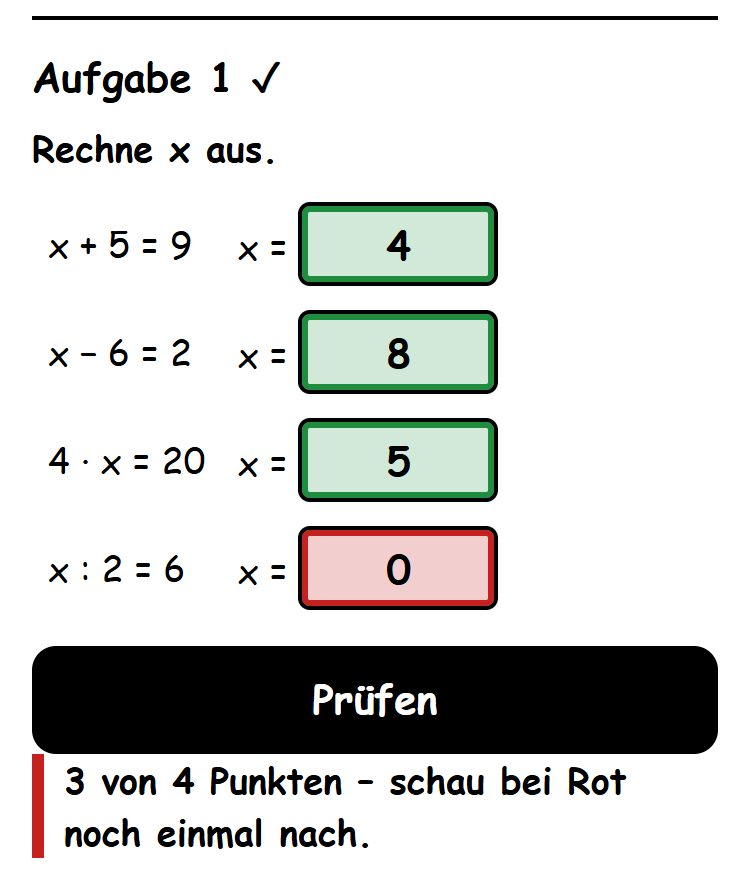
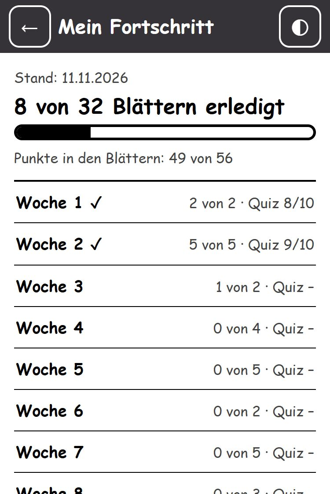

Vorbereitungskurs Installations- und Gebäudetechnik
Fit für den ersten Lehrgang
Eine kostenlose Lern-App für Jugendliche, die eine Lehre in der Installations- und Gebäudetechnik beginnen. Sie üben Fachkunde und Mathematik am Handy. Im Betrieb, zu Hause oder wann immer Zeit ist.
▶ App öffnenOhne Anmeldung, sofort loslegenWas ist IGT Checker?
IGT Checker bereitet auf den Stoff der Berufsschule vor. Der Kurs ist für 10 Wochen geplant. Wer schneller ist, kann ihn auch in kürzerer Zeit durcharbeiten. Fachkunde und Mathematik wechseln sich ab:
- Fachkunde: Zeichnen, Rohre, Sanitärgegenstände, Wasserversorgung, Heizung, Werkstoffe
- Mathematik: Formeln, Längen, Flächen, Volumen, Rohrinhalt, Masse
Jede Woche hat Blätter zum Lesen und Ausfüllen, Lernkarten und ein Quiz. Zu vielen Blättern gibt es ein Lernvideo.
So funktioniert's



Für Lehrbetriebe und Eltern
Geben Sie Ihrem Lehrling diesen QR-Code oder die Adresse:
rainerlernstoff.github.io/
- Keine Anmeldung, nichts zu installieren.
- Am Handy „Zum Startbildschirm hinzufügen“: Dann läuft die App ohne Internet.
- Planen Sie die Lernzeiten mit dem Jugendlichen und lassen Sie sich „Mein Fortschritt“ zeigen.
Kostenlos und sicher
- Für Lehrlinge kostenlos und ohne Werbung.
- Keine Anmeldung, keine Namen, keine E-Mail.
- Der Fortschritt bleibt nur am Handy gespeichert. Nichts wird verschickt.
- Funktioniert nach dem ersten Öffnen auch offline. Nur die Videos brauchen Internet (YouTube).
Über mich
Ich heiße Rainer Mayrhofer. Seit 2009 bringe ich angehenden Installateuren Fachkunde und Mathematik bei. Die App IGT Checker hilft den Jugendlichen, eventuelle Wissenslücken zu schließen und erfolgreich in den Lehrberuf zu starten.
Neuartige Lernkonzepte interessieren mich. Die App habe ich privat und aus Eigeninteresse entwickelt. Sie ist kein offizielles Angebot einer Schule.
Für Organisationen und Ausbildungsbetriebe
Sie möchten IGT Checker für Ihre Lehrlinge, Kurse oder Mitglieder einsetzen? Ich passe die App gerne an: eigene Inhalte, eigenes Logo, eigener Kursplan. Schreiben Sie mir, ich stelle Ihnen die App gerne persönlich vor.
✉ Kontakt aufnehmenÖffnet Ihr E-Mail-Programm.IGT Checker unterstützen
Für Lehrlinge ist IGT Checker kostenlos. Neue Blätter, Lernkarten und Videos entstehen in meiner Freizeit. Wenn Sie als Elternteil oder Lehrbetrieb diese Arbeit unterstützen möchten, freue ich mich über einen freiwilligen Beitrag.
Dieser Aufruf richtet sich an Erwachsene. Die App funktioniert ohne Beitrag genauso.
▶ App öffnen